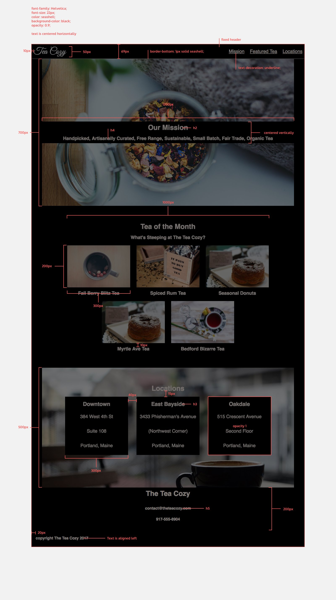

Tea Cozy Website
The Tea Cozy website is a project that involved creating a visually appealing and user-friendly website for a fictional tea company. The website showcases the company's mission, featured teas, locations, and contact information. The design emphasizes a cozy and inviting atmosphere, aligning with the brand's desired aesthetic.
At the beginning of the project I was given this redline (click to enlarge) of how the owner would like it to be designed, and it's my job to make their dreams a reality.

Below you will find the steps I took to complete this project, but here you will find the completed website, and here you will find the stylesheet.
Method
The first step in creating the Tea Cozy website was getting comfortable with the supplied redline. I added all the html code first, then when I was working through the stylesheet I started adding ids and classes to the sections to ensure it matched the design. I also added a contact link into the navigation as it was missing from the redline but I felt it was important to include but didn't take anything away from the main design
<header>
<img src="Resources/tea-cozy-logo.png" alt="Tea Cozy Logo" id="logo">
<nav>
<ul>
<li><a href="#mission">Mission</a></li>
<li><a href="#featuredtea">Featured Tea</a></li>
<li><a href="#locations">Locations</a></li>
<li><a href="#contact">Contact</a></li>
</ul>
</nav>
</header>
Another things I did was use sematic HTML tags to ensure the website was structured properly. For example, I used <header> for the header section, <main> for the main content and <figure> and <figcaption> for the tea images and their captions. This also helped with the styling of the figures, as It allowed me just put each figure in with own box.
<figure>
<img src = "Resources/berryblitz.jpg" alt="Berry Blitz Tea">
<figcaption><h4>Berry Blitz Tea</h4></figcaption>
</figure>
The final thing I took the initiative with was the opacity of the Our Mission. I felt like it took too much away from the background image so I adjusted it to be more subtle.
Obviously, if this was for an actual client I would run all these adaptations by them and get their approval before continuing. However, I would have sent them an example of both instances as I find some people struggle to visualise things from the written or spoken word.
My next step was to complete the stylesheet for the website. I was sure to add comments throughout the code to ensure I could keep track of what each section was doing. These comments would make it easier if I came back to edit it, or if someone else needed to work on the code in the future.
/* Main content styles */
main {
position: relative;
top: 69px;
z-index: 1;
}
div {
text-align: center;
justify-self: center;
}
From the above code you can see that I changed the z-index of the main element to ensure it appeared below the fixed header elements on the page and prevented overlapping.
I initally created CSS code for the body of the webpage to set the font family, background colour, and general styles for the entire page. This allowed me to maintain a consistent look and feel throughout the website and to keep my code DRY (Don't Repeat Yourself).
body {
font-family: Helvetica, Arial;
background-color: black;
font-size: 22px;
color: seashell;
opacity: 0.9;
}
Another thing that I did withing the stylesheet was to use flexbox to create a responsive layout for the featured teas section. This allowed the tea images to adjust their size and position based on the screen size, ensuring a consistent and visually appealing layout across different devices.
.featuredtea {
display: flex;
justify-content: center;
align-items: center;
flex-direction: column;
}
Finally, I added justify-content: space-around for the locations to ensure that the location boxes were evenly spaced within their container. This created a balanced and visually appealing layout for the locations section.
.boxes {
width: 1200px;
display: inline-flex;
justify-content: space-around;
align-items: center;
}